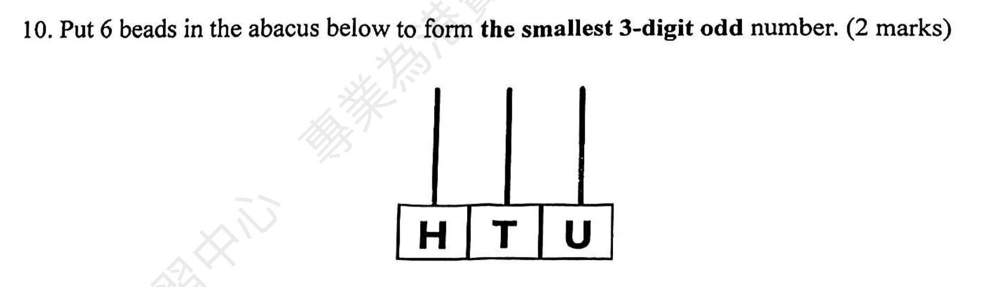
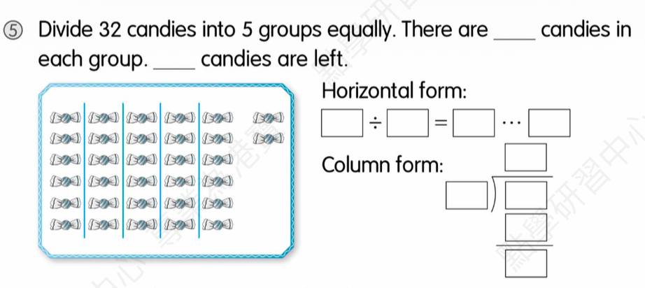

动词填空：We usually (3) ___ a cap, a T-shirt and shorts when we go out.
Answer: wear
Explanation: 学生答案：待确认；一般现在时用法；usually是一般现在时的标志词
已掌握
| # | 单词/词组 | 中文意思 | 例句/说明 | 已掌握 |
|---|---|---|---|---|
| noun 名词 | ||||
| 1 | hotel | 酒店 | We stayed in a hotel. | |
| 2 | cinema | 电影院 | We watch films at the cinema. | |
| 3 | Tuesday | 周二 | I can use Tuesday in class. | |
| 4 | Saturday | 周六 | I can use Saturday in class. | |
| 5 | flower | 花 | This flower is red. | |
| 6 | role | 角色 | I have a role in the play. | |
| 7 | autumn | 秋天 | I can use autumn in class. | |
| 8 | shopkeeper | 售货员 | I can use shopkeeper in class. | |
| 9 | poem | 诗歌 | Read the poem. | |
| verb 动词 | ||||
| 10 | stay | 待在 | I stay at home on rainy days. | |
| 11 | touch | 触摸 | Do not touch the hot cup. | |
| 12 | suggest | 建议 | I suggest we play outside. | |
| 13 | celebrate | 庆祝 | We celebrate my birthday. | |
| phrase 短语 | ||||
| 14 | post office | 邮局 | I can use post office in class. | |
| noun phrase 名词短语 | ||||
| 15 | primary student | 小学生 | I am a primary student. | |
| adjective 形容词 | ||||
| 16 | untidy | 不爱干净的 | I can use untidy in class. | |
| 17 | helpful | 有帮助的 | I can use helpful in class. | |
| 18 | popular | 流行的 | I can use popular in class. | |
| uncategorized 未分类 | ||||
| 19 | hide | 隐藏 | I can use hide in class. | |
| 20 | September | 九月 | I can use September in class. | |
| # | 单词/词组 | 中文意思 | 例句/说明 | 已掌握 |
|---|---|---|---|---|
| adjective 形容词 | ||||
| 1 | dangerous | 危险的 | The road is dangerous. | |
| 2 | brave | 勇敢的 | The brave boy helps others. | |
| noun 名词 | ||||
| 3 | packet | 包；小包 | I bought a packet of biscuits. | |
| 4 | fin | 鱼鳍 | A fish has a fin. | |
| 5 | leader | 领导者 | The leader helps the group. | |
| 6 | character | 角色；人物 | The story has many characters. | |
| 7 | housewife | 家庭主妇 | The housewife is cooking. | |
| 8 | shelf | 架子 | I can use shelf in class. | |
| 9 | blog | 博客 | I can use blog in class. | |
| 10 | badminton | 羽毛球 | I play badminton with my friend. | |
| 11 | guitar | 吉他 | She plays the guitar. | |
| 12 | moral | 道理 | The story has a moral. | |
| 13 | kind | 种类 | A dog is a kind of animal. | |
| 14 | piece | 一块/一张 | I want one piece of paper. | |
| 15 | musician | 音乐家 | The musician plays music. | |
| 16 | costume | 戏服 | I wear a costume at the festival. | |
| 17 | picnic | 野餐 | We have a picnic in the park. | |
| noun phrase 名词短语 | ||||
| 18 | department store | 百货商店 | We shop at the department store. | |
| verb 动词 | ||||
| 19 | weigh | 称重 | We weigh the bag. | |
| 20 | collect | 收集 | I collect stamps. | |
| 21 | chase | 追逐 | The dog may chase the ball. | |
| preposition 介词 | ||||
| 22 | behind | 在后面 | The cat is behind the box. | |
| phrase 短语 | ||||
| 23 | ice lollies | 雪糕 | I can use ice lollies in class. | |
| noun/verb 名词/动词 | ||||
| 24 | survey | 调查 | We do a survey in class. | |
| uncategorized 未分类 | ||||
| 25 | line | 行数 | I can use line in class. | |
| 26 | spelling | 拼写 | I can use spelling in class. | |
| 27 | organic | 有机的 | I can use organic in class. | |
| 28 | plain | 普通的 | I can use plain in class. | |
| 29 | adult | 成年人 | I can use adult in class. | |
| 30 | detail | 细节 | I can use detail in class. | |
| # | 单词/词组 | 中文意思 | 例句/说明 | 已掌握 |
|---|---|---|---|---|
| time/date 时间日期 | ||||
| 1 | July | 七月 | July is the seventh month. | |
| 2 | October | 十月 | October is the tenth month. | |
| 3 | December | 十二月 | December is the twelfth month. | |
| 4 | Tuesday | 星期二 | Tuesday is a weekday. | |
| 5 | Wednesday | 星期三 | Wednesday is a weekday. | |
| 6 | Sunday | 星期日 | Sunday is a weekend day. | |
| time unit 时间单位 | ||||
| 7 | day | 日 | A day has 24 hours. | |
| directions 方向 | ||||
| 8 | west | 西 | The sun sets in the west. | |
| numbers 数字 | ||||
| 9 | six | 6 | Six is 6. | |
| 10 | eleven | 11 | Eleven is 11. | |
| 11 | thirteen | 13 | Thirteen is 13. | |
| 12 | seventeen | 17 | Seventeen is 17. | |
| 13 | forty | 40 | Forty is 40. | |
| ordinal numbers 序数 | ||||
| 14 | second | 第二 | This is the second shape. | |
| solid shape 立体图形 | ||||
| 15 | sphere | 球 | A sphere is round. | |
| # | 单词/词组 | 中文意思 | 例句/说明 | 已掌握 |
|---|---|---|---|---|
| operations 运算 | ||||
| 1 | subtraction | 减法 | Subtraction means taking away. | |
| 2 | total | 总共的 | Find the total number of apples. | |
| 3 | altogether | 一起 | How many are there altogether? | |
| 4 | carrying | 进位 | Carrying helps when the ones make ten. | |
| 5 | be left | 剩下的 | How many apples will be left? | |
| geometry 几何 | ||||
| 6 | perpendicular | 垂直 | Perpendicular lines meet at a right angle. | |
| 7 | grid | 网格 | A grid helps us find positions. | |
| 8 | line segment | 线段 | Draw a line segment. | |
| 9 | adjecent side | 邻边 | I can read adjecent side in a math question. | |
| question word 题目词 | ||||
| 10 | calculate | 计算 | Calculate the answer. | |
| 11 | estimate | 估计 | Estimate the answer first. | |
| 12 | onwards | 向前；继续向前 | Count onwards from 20. | |
| 13 | backwards | 向后；倒着 | Count backwards from 20. | |
| 14 | match | 匹配 | Match the number to the word. | |
| 15 | respectively | 分别地 | Tom and Ben have 2 and 3 books respectively. | |
| comparison 比较 | ||||
| 16 | fewer | 更少 | There are fewer apples in this box. | |
| time/date 时间日期 | ||||
| 17 | common year | 平年 | I can read common year in a math question. | |
| position 位置 | ||||
| 18 | below | 下面 | The box is below the table. | |
| 19 | front | 前面 | The door is at the front of the room. | |
| 20 | above | 上面 | The clock is above the board. | |
| operations calculation 运算 | ||||
| 21 | equally | 平等地 | Share the apples equally. | |
| 22 | remainder | 余数 | The remainder is left after division. | |
| teacher math vocabulary 老师数学词汇 | ||||
| 23 | between and | 在...之间 | I can read between and in a math question. | |
| currency money 货币 | ||||
| 24 | cent | 分 | One cent is a small amount of money. | |
| measurement 测量 | ||||
| 25 | centimetre | 厘米 | A centimetre is a small unit of length. | |
| 26 | measure | 测量 | We measure the length with a ruler. | |
| 27 | length | 长度 | Find the length of the line. | |
| position order 位置和顺序 | ||||
| 28 | following | 下面的 | Answer the following questions. | |
| 句型结构 | ||||
| 29 | Angle ... is the largest. | 角......是最大的。 | Angle A is the largest. | |
| 30 | The lines are perpendicular to each other. | 这些线彼此垂直。 | The lines are perpendicular to each other. | |



